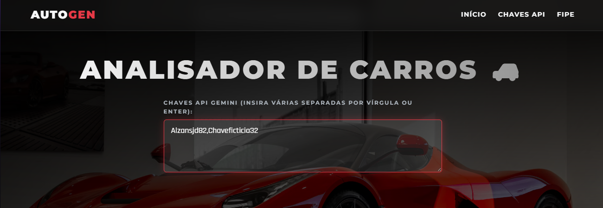
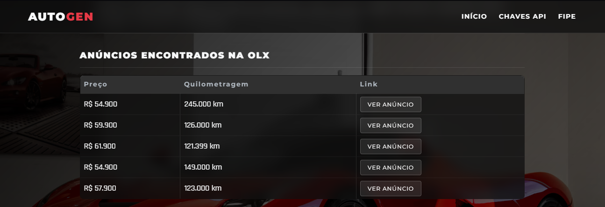
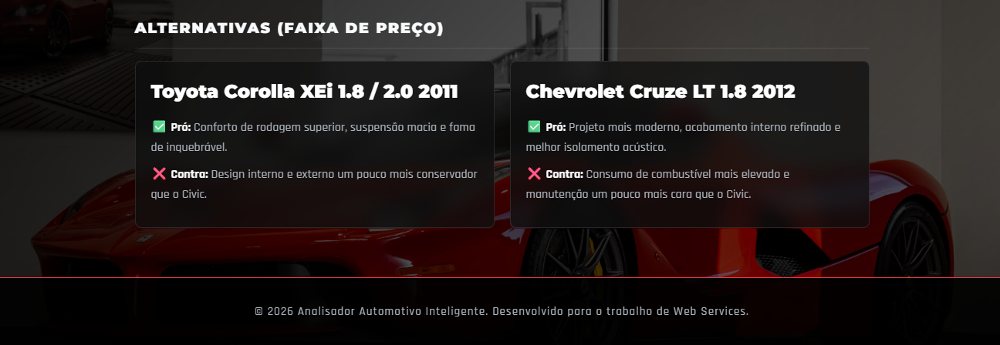

A Ideia e Motivação
Comprar um carro usado no Brasil é um desafio. O comprador comum frequentemente se vê perdido entre o preço idealizado da Tabela FIPE e a realidade dos preços cobrados no mercado. Além disso, avaliar se um modelo tem um bom custo-benefício, se a manutenção é acessível ou se existem opções melhores na mesma faixa de preço exige horas de pesquisa.
A solução? O AutoGEN combina três forças poderosas: dados oficiais (API da Tabela FIPE), dados reais de mercado (Web Scraping de anúncios locais da OLX via backend Python Flask) e a inteligência analítica do modelo LLM Gemini do Google.
O resultado é uma plataforma que não apenas joga os dados na tela, mas atua como um consultor automotivo, entregando um veredito direto, prático e confiável sobre a viabilidade da compra.
Como Funciona o Sistema
1. Inserção das Chaves de API
A aplicação requer uma chave da API do Google Gemini para funcionar. Pensando em segurança e estabilidade, o sistema suporta o rodízio de chaves (inseridas separadas por linha ou vírgula). Se uma chave exceder a cota, o sistema pula automaticamente para a próxima.
- Acesse o Google AI Studio e faça login com sua conta Google.
- No menu lateral esquerdo, clique em Get API key.
- Clique no botão azul Create API key, vincule a um projeto existente (ou crie um novo) e copie a string gerada (começa com
AIza...).

Interface limpa para inserção de múltiplas chaves API, garantindo alta disponibilidade.
2. Seleção do Veículo (Integração FIPE)
O usuário seleciona a Marca, o Modelo e o Ano do carro através de menus suspensos (dropdowns). Esses campos são alimentados em tempo real (em cascata) consumindo a API pública da Tabela FIPE. Só é possível avançar quando os três campos estiverem preenchidos e validados.

Os menus são bloqueados sequencialmente para evitar requisições inválidas à API da FIPE.
3. A Avaliação Especializada (IA)
Com os dados do mercado em mãos, o Gemini processa as informações e retorna a tela principal. O primeiro widget gerado é o veredito de Custo-Benefício e os Pontos Importantes, destacando rapidamente se o carro é uma boa compra, quais os problemas crônicos a observar e as qualidades do modelo.

A cor da interface reage à IA: Borda verde para "Bom" e vermelha para "Ruim".
4. Web Scraping de Anúncios Reais
Não basta saber a teoria, é preciso ver a prática. Uma API própria desenvolvida em Python intercepta a busca e realiza um Web Scraping na OLX para trazer anúncios reais daquele modelo/ano, exibindo o Preço, a Quilometragem e um link direto para o anúncio real do vendedor.

Dados reais do mercado injetados na interface para comparação imediata com a FIPE.
5. Sugestões de Alternativas
Se o carro escolhido for uma má opção, ou se o usuário quiser expandir os horizontes, o Gemini analisa a faixa de preço e sugere veículos de categorias similares, listando suas maiores vantagens e desvantagens de forma direta, sem linguagem técnica excessiva.

Cards estruturados para comparação rápida entre as alternativas de mercado.
Rodando o Projeto (Tutorial)
Por se tratar de um projeto que utiliza o consumo de APIs externas (CORS) e execução de Web Scraping, é necessário rodar um servidor web local para o HTML e um servidor Flask para o Python.
Preparando o Ambiente
- Live Server (VS Code): Abra seu Visual Studio Code, vá na aba de Extensões (
Ctrl+Shift+X), procure por "Live Server" e instale. Clique no botão "Go Live" na barra inferior direita do VS Code com o arquivoindex.htmlaberto. - Instalando o Miniconda: Baixe o Miniconda e instale-o no seu computador (ele gerenciará o Python para não conflitar com seu sistema).
- Bibliotecas Python: Abra o aplicativo Anaconda Prompt, navegue até a pasta do projeto (usando
cd caminho/da/pasta) e execute:pip install flask flask-cors beautifulsoup4 requests - Ligando a API Local: No mesmo terminal, digite
python Api.py. Se aparecer algo como "Running on http://127.0.0.1:8000", seu backend está pronto!
Demonstração em Vídeo
Abaixo você acompanha todo esse fluxo acontecendo na prática, desde a inicialização dos servidores até a consulta ao Gemini gerando os componentes visuais.
Execução completa: Ativação dos servidores, inserção de chave e veredito final.